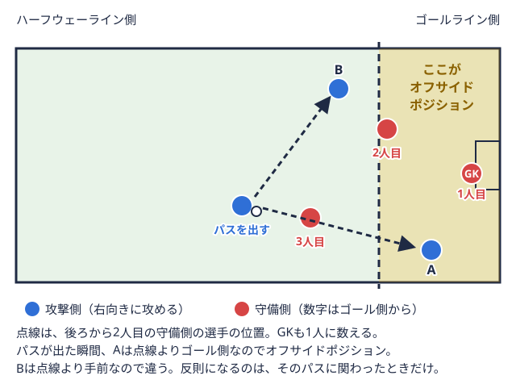
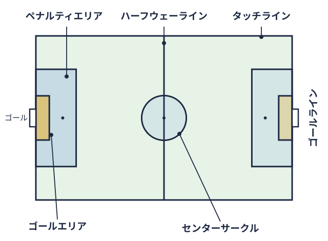

ルール解説 2026-09-22
オフサイドとは？図解でわかりやすく｜3つの条件・反則になる場面・例外【2026/27競技規則】
はじめての方向け
オフサイド攻撃側の選手が、味方がボールを蹴った瞬間に相手ゴールに近い不利な位置にいて、プレーに関わると取られる反則。 
オフサイドはなぜわかりにくいと言われるのか
オフサイドポジションにいることと、オフサイドの反則を取られることは別物です。競技規則でも、まず位置の条件が説明され、そのあとに反則になる条件が説明されます。「位置」→「関与」の2段階で考えると、以降の説明が追いやすくなります。
判定の流れは「位置→関与→例外」の3ステップ
実戦で迷ったときは、次の順で確認します。
- 位置: 味方がボールをプレーした瞬間に、オフサイドポジションにいたか
- 関与: その選手が、ボールをプレーする・相手に干渉する・利益を得る、のいずれかをしたか
- 例外: ゴールキック攻撃側が最後に触れたボールがゴールラインを越えたとき、守備側がゴール前の小さな区画から蹴って再開する方法。
 用語辞典で見る・スローインボールがタッチラインを越えたとき、最後に触れなかった側が両手で頭の後ろから投げ入れて再開する方法。用語辞典で見る・コーナーキック守備側が最後に触れたボールがゴールラインを越えたとき、攻撃側がピッチの角から蹴って再開する方法。用語辞典で見るから直接受けたか、相手が意図的にプレーしたボールか
用語辞典で見る・スローインボールがタッチラインを越えたとき、最後に触れなかった側が両手で頭の後ろから投げ入れて再開する方法。用語辞典で見る・コーナーキック守備側が最後に触れたボールがゴールラインを越えたとき、攻撃側がピッチの角から蹴って再開する方法。用語辞典で見るから直接受けたか、相手が意図的にプレーしたボールか
オフサイドポジションの3条件
JFAが公開している「サッカー競技規則2026/27」第11条オフサイドの「1. オフサイドポジション」では、頭・胴体・足の一部が次の条件をすべて満たす位置にいる競技者を、オフサイドポジションにあるとしています。
- 相手競技者のハーフ（相手陣内）にいる（ハーフウェーラインピッチを自陣側と相手側の半分に分ける、中央の線。試合の開始や再開のときはここから始める。

用語辞典で見るは相手ハーフに含まれません） - ボールより相手競技者のゴールラインピッチの短い辺の境界線で、ゴールが置かれている側の線。ボールの全体が越えるとプレーが止まる。用語辞典で見る（ピッチの短い辺で、ゴールが置かれた側の線）に近い位置にいる
- 後方から数えて2人目の相手競技者より、相手競技者のゴールラインに近い位置にいる
この判定では頭・胴体・足の位置が基準になり、ゴールキーパーゴールを守る選手で、チームで唯一、ペナルティエリア内で手を使える。パスをつなぐ役もこなす。 用語辞典で見るを含むすべての競技者の手や腕は含まれません。腕の上限は脇の下の最も奥の位置とされています。手や腕だけが前に出ている状態は、オフサイドポジションの判断材料にはなりません。
用語辞典で見るを含むすべての競技者の手や腕は含まれません。腕の上限は脇の下の最も奥の位置とされています。手や腕だけが前に出ている状態は、オフサイドポジションの判断材料にはなりません。
「2人目の相手競技者」の数え方
最終ラインゴールキーパーの前で、横に並んで守る守備の選手たちの列。この位置の高さが、守り方の特徴になる。用語辞典で見る（ゴールキーパーの前で横に並んで守る選手の列）をイメージするときは、ゴールキーパーも相手競技者の1人として数えます。ゴールキーパーが前に出ている場面では、フィールドプレーヤーの最終ラインだけを基準にした感覚と実際の判定がずれることがあります。
同じ高さ（同一線上）はオフサイドポジションではない
後方から2人目の相手競技者と同じ高さ、または最後方の2人の相手競技者と同じ高さにいる場合は、オフサイドポジションになりません。ボールより相手ゴールラインに近いことも条件なので、ボールより後ろ（自陣側）にいる選手もオフサイドポジションではありません。
オフサイドポジションにいるだけでは反則にならない
競技規則第11条の「2. オフサイドの反則」では、オフサイドポジションにいること自体は反則ではないと明記されています。オフサイドポジションにいる競技者が反則を取られるのは、味方がボールをプレーした（触れた）瞬間を基準に、次のいずれかに関与した場合です。
- 味方が蹴ったり触れたりしたボールをプレーする、またはそれに触れる
- 相手の視線を明らかに遮る、ボールに向かって相手にチャレンジするなど、相手のプレーに干渉する
- その位置にいることで利益を得る。具体的には、ゴールポスト・クロスバー・審判員・相手競技者に当たって方向が変わったボールをプレーする場合や、相手に意図的にセーブされたボールをプレーする場合
味方のパスコースに関係せず、プレーにも干渉していない選手がオフサイドポジションにいるだけなら、反則の対象にはなりません。この「関与しているか」の判断が、映像だけでは分かりにくい理由のひとつです。
反則にならない主な例外
競技規則第11条の「3. 反則とならない場合」では、次の3つの再開方法から直接ボールを受けた場合は、オフサイドの反則にならないとされています。
- ゴールキック（守備側がゴールエリアゴールのすぐ前にある小さな長方形の区画。ゴールキックのとき、ボールはこの中に置く。用語辞典で見るから蹴って再開する方法）
- スローイン（ボールがタッチラインを越えたとき、投げ入れて再開する方法）
- コーナーキック（守備側が最後に触れたボールがゴールラインを越えたとき、攻撃側がピッチの角から蹴って再開する方法）
また、相手競技者が意図的にプレーしたボールを受けた場合は、利益を得たとはみなされません。ただし、相手が意図的にセーブしたボールは除かれ、この場合は利益を得たものとして扱われます。「意図的なプレー」とみなす基準や「セーブ」の定義は、競技規則の中で別に定められています。
場面別 オフサイドになる／ならない早見表
競技規則第11条の記述にもとづく整理です。実際の判定は、状況に応じて審判員が行います。
| 場面 | 判定の目安 |
|---|---|
| 後方から2人目の相手と同じ高さにいる | オフサイドポジションではない |
| パスが出た瞬間にボールより後ろにいた | オフサイドポジションではない |
| 自陣（ハーフウェーラインを含む自分たちの側）にいる | オフサイドポジションではない |
| ゴールキック・スローイン・コーナーキックから直接受けた | 反則にならない |
| 相手が意図的にプレーしたボールを受けた（意図的なセーブを除く） | 利益を得たとはみなされない |
| 相手が意図的にセーブしたボールをプレーした | 関与（利益を得る）にあたる |
| ゴールポストやクロスバーに当たって跳ね返ったボールをプレーした | 関与（利益を得る）にあたる |
| 相手の視線を明らかに遮った | 干渉にあたる |
オフサイドの罰則は間接フリーキック
競技規則第11条の「4. 反則と罰則」では、オフサイドの反則は、反則が起きた地点からの間接フリーキック反則があった地点から、止めたボールを蹴って再開する方法。直接ゴールを狙える場合と、狙えない場合がある。用語辞典で見るで再開されます。反則が起きた地点が反則した側の陣内であっても同じです。間接フリーキックは、ほかの競技者に触れてからでないと直接ゴールに入っても得点にならない再開方法です。
判定はいつのタイミングで行われるのか
基準になるのは「味方がボールをプレーした（触れた）瞬間」の位置です。パスが出たあとに走り込んで最終ラインを越えた選手は、その瞬間にはオフサイドポジションにいないため、位置の条件にはあたりません。逆に、パスが出た瞬間にオフサイドポジションにいた選手が、いったん戻ってからボールに関与した場合でも、位置は味方がボールをプレーした瞬間で判断されます。リプレーで静止画が使われるのは、この瞬間を確認するためです。
大学サッカーの公式戦を観戦するときに迷ったら、2026/27の変更点をまとめたルール改正2026/27の解説記事や、用語の意味を確認できる用語辞典のオフサイドもあわせて参照してください。
VARや近年の運用について
近年はVARビデオ映像を使って、得点や退場などの重要な判定を確認し、主審の判断を助ける仕組み。用語辞典で見る（ビデオ・アシスト・レフェリー）が導入された大会で、頭・胴体・足のわずかな位置関係まで映像で確認する運用が広がっています。競技規則第5条（主審試合を進行し、反則などの判定を最終的に決める審判。ピッチの中で笛を吹く。用語辞典で見る）には、オフサイドの判定に半自動オフサイドテクノロジーを使用できる旨の記載があります。ただし、大学サッカーの公式戦でVARなどが使われるかどうかは大会・カテゴリーによって異なります。2026/27版で第11条そのものに変更があるかどうかは、この記事の執筆時点で確認できていません。最新の内容はJFA公式サイトの競技規則ページで確認してください。
大学サッカーの試合でオフサイドを意識して見るポイント
ルールの基本を押さえたら、実際の試合でオフサイドの場面を意識して観戦してみてください。本サイトでは関東・関西・東北・北信越の4連盟について、1部・2部それぞれの順位表や試合結果を公開しています。たとえば関西学生サッカーリーグ1部の順位表から気になるチームの試合結果ページに進み、得点・失点のシーンでDFライン（守備の選手が横に並ぶ列）がどう上げ下げされていたかを振り返ると、最終ラインの管理とオフサイドの関係がイメージしやすくなります。
DFラインを高く保つチームでは、裏へのパス1本でオフサイドの判定が絡む場面が増える傾向があります。最終ラインの選手がどのタイミングでラインを上げているかを意識すると、オフサイドがルールの暗記ではなくチーム戦術の一部として見えてきます。東北大学サッカーリーグ1部や北信越大学サッカーリーグ1部の試合結果でも同じ視点で振り返ってみてください。
審判の動きや資格に関心がある方は大学サッカー部員が4級審判資格を取る方法、戦術用語を整理したい方は大学サッカー部の戦術用語一覧も参考になります。
よくある質問
相手がクリアしたボールを受けた場合もオフサイドになりますか
競技規則では、相手が意図的にプレーしたボールを受けた場合は、利益を得たとはみなされません（意図的なセーブを除く）。一方、ポストやクロスバー、審判員、相手に当たって方向が変わっただけのボールは、利益を得る関与にあたる場合があります。意図的なプレーかどうかの判断は審判員が行います。
ドリブルで持ち込んだ場合もオフサイドになりますか
オフサイドの判定は「味方がボールをプレーした瞬間」の位置が基準です。ボールを保持して自分でドリブルを続けている選手は、味方がプレーしたボールを受けたわけではないため、この基準にはあたりません。
同じ高さにいたらオフサイドですか
後方から2人目の相手競技者、または最後方の2人の相手競技者と同じ高さにいる場合は、オフサイドポジションにあたりません。
副審（線審）はどうやって瞬時に判定しているのですか
副審タッチライン沿いで旗を使い、ボールが出た方向やオフサイドなどを主審に知らせる審判。用語辞典で見るは攻撃側の最終ライン付近に位置取りし、味方がボールをプレーした瞬間の攻撃側選手の位置を見極めてフラッグを上げる役割を担っています。VARが導入された大会では、映像面から判定を補助する運用もあります。
ハーフウェーラインより自陣側にいる場合はどうなりますか
オフサイドポジションの条件には「相手競技者のハーフにいる」ことが含まれ、ハーフウェーラインは相手ハーフに含まれません。自分たちの陣内にいる選手は、オフサイドポジションにあたりません。
オフサイドの反則になるとどう再開されますか
反則が起きた地点からの間接フリーキックで再開されます。
まとめ
オフサイドは、「味方がボールをプレーした瞬間にオフサイドポジションにいるか」という位置の条件と、「その選手がプレーに関与したか」という反則の条件を分けて考えると整理できます。同じ高さはオフサイドポジションではないこと、ゴールキック・スローイン・コーナーキックから直接受けた場合や相手が意図的にプレーしたボールを受けた場合（意図的なセーブを除く）は反則にならないこと、反則の再開は間接フリーキックであることもあわせて押さえておくと、観戦や部内ミーティングでの説明がしやすくなります。2026/27の改正点全体はルール改正2026/27の解説記事で確認できます。
---
出典：日本サッカー協会（JFA）公式サイト「サッカー競技規則2026/27」第11条オフサイドをもとに編集部作成
この部活・競技を応援したい方へ。
取材してほしい部活を募集中
オフシーズン・引退後に、長期インターンという選択
部活で培った力を実務で試す。16タイプ診断（30秒）で合う企業がわかります。